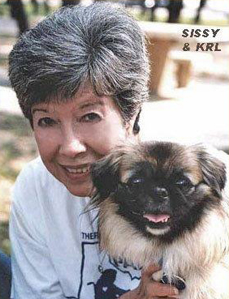
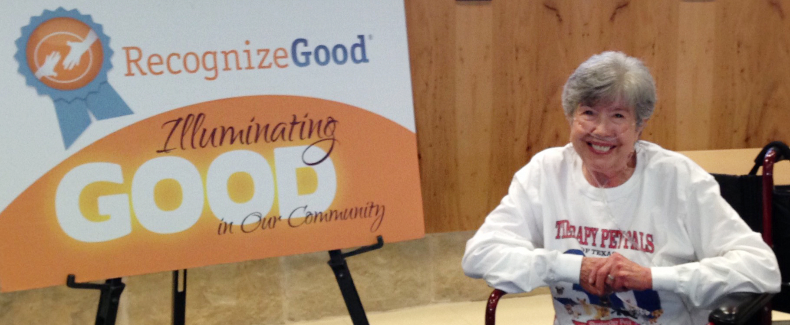
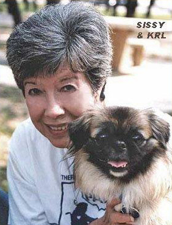
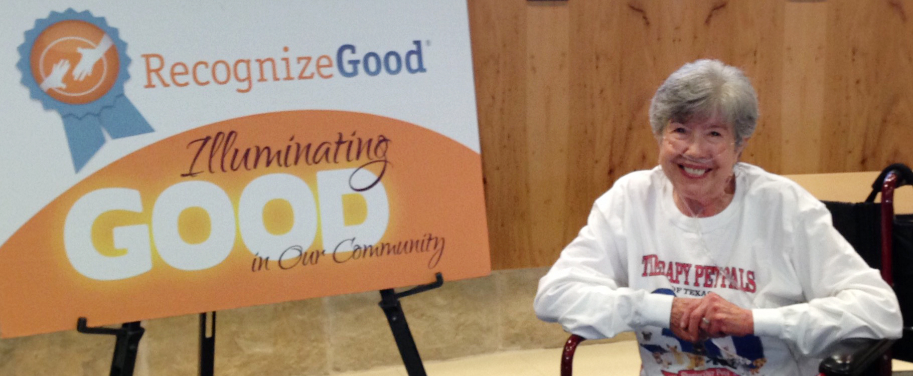
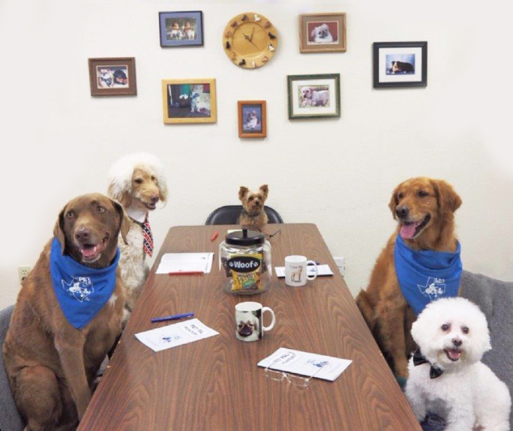
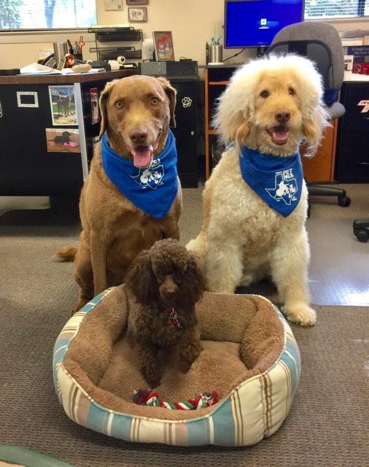
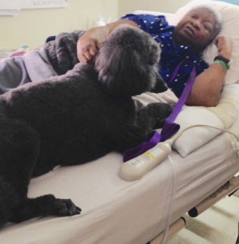
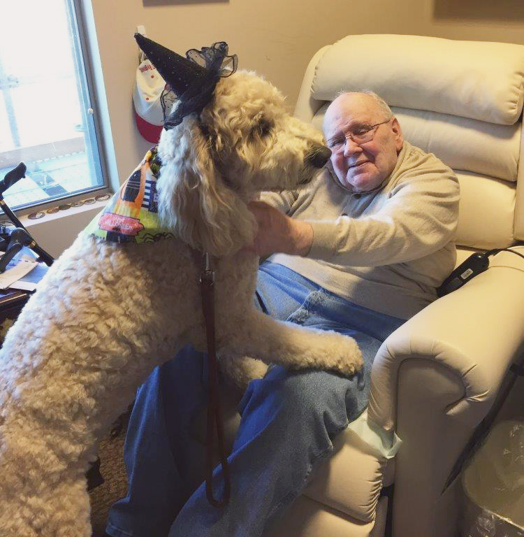

Therapy Pet Pals of Texas, Inc.
Therapy Pet Pals of Texas, Inc.
Pet Pals began in March of 1984 when TPPT founder, Kathryn Lashmit, was inspired after reading about an experimental animal assisted therapy program. She decided to try to make a real difference in the lives of people living in local healthcare facilities by taking her puppy on a visit. Although hesitant at first, a nursing home administrator agreed to a trial visit. The staff watched with delight as residents smiled and reached out for the little bundle of life that lovingly greeted everyone. At that moment, Therapy Pet Pals of Texas, Inc. was born.

TPPT is a private non-profit, charitable 501(c)(3) corporation that was founded solely for the purpose of enhancing the quality of life for all institutionalized people. TPPT’s pet therapy program gives happiness and companionship to those “most often forgotten” in today’s society: the elderly, the mentally and physically challenged, and the terminally ill.
TPPT’s animal assisted therapy visitations make a difference in the lives of people who are confined to institutionalized living. Our volunteers and their therapy dogs visit healthcare facilities to share their love, heart-to-heart and one-on-one. Through regular visits, TPPT’s pets BOND with the patients/residents who desperately need the unconditional love offered by our gentle, loving pet volunteers.
From TPPT’s humble beginning in 1984, we have grown to approximately 200 trained volunteers and even more pets. We are currently serving approximately 90 different healthcare facilities/institutions, which include: nursing homes, medical hospitals, rehabilitation centers, MHMR State facilities and many other “special need” environments. No fee or service charge has ever been required for our Pet Pal programs.
In 2016, TPPT volunteers logged 11,181 hours in service to their communities, traveled approximately 81,638 miles (at their own expense), and were responsible for 114,429 smiles from the residents/patients they visited! We continually strive to increase our membership so we may reach more elderly and ill residents in our community.


TPPT is a private non-profit, charitable 501(c)(3) corporation that was founded solely for the purpose of enhancing the quality of life for all institutionalized people. TPPT’s pet therapy program gives happiness and companionship to those “most often forgotten” in today’s society: the elderly, the mentally and physically challenged, and the terminally ill.
TPPT’s animal assisted therapy visitations make a difference in the lives of people who are confined to institutionalized living. Our volunteers and their therapy dogs visit healthcare facilities to share their love, heart-to-heart and one-on-one. Through regular visits, TPPT’s pets BOND with the patients/residents who desperately need the unconditional love offered by our gentle, loving pet volunteers.
From TPPT’s humble beginning in 1984, we have grown to approximately 200 trained volunteers and even more pets. We are currently serving approximately 90 different healthcare facilities/institutions, which include: nursing homes, medical hospitals, rehabilitation centers, MHMR State facilities and many other “special need” environments. No fee or service charge has ever been required for our Pet Pal programs.
In 2016, TPPT volunteers logged 11,181 hours in service to their communities, traveled approximately 81,638 miles (at their own expense), and were responsible for 114,429 smiles from the residents/patients they visited! We continually strive to increase our membership so we may reach more elderly and ill residents in our community.

Kathryn R. Lashmit 1942 - 2016
.

Board of Directors
Thomas G. Bradfield, D.V.M.,
Chairman
Nancy J. Gray
Kathleen A. Grosch
James D. Lashmit
James E. Payne, C.P.A.
Megan S. Medica,
Director Emeritus
Advisory Council
Kathy Grosch
Nancy Gray
Lana Newlander
Lisa L. Reed
Nedy West
Foundations
 Albert and Ethel Herzstein Charitable FoundationArnold Foundation
Carl C. Anderson, Sr. & Marie Jo Anderson Charitable Foundation
Donald D. Hammill Foundation
ECG Foundation
Ed Rachal Foundation
ExxonMobil Foundation
ForeSight Foundation
George & Mary Josephine Hamman Foundation
Harry S. & Isabel C. Cameron Foundation
KCL Foundation
Murar Foundation, Inc.
Paul B. & Frances Lenora Terry, Jr. Family Foundation
Salzman-Medica Family Fund
Sereno Mare Blu Foundation
Shomos Family Foundation LTD
The Abbott Foundation
The David and Willa Grace Wynne Foundation
The Glassell Family Foundation, Inc.
The Lewis and Joan Lowenstein Foundation
The Lind Family Charitable Foundation
The Medallion Foundation, Inc.
The Montgomery County Community Foundation
The Nanette C. Wickham Charitable Trust
The R. H. and A. Q. Lawe Foundation
The Rachael & Ben Vaughan Foundation
The Ray & June Smith Charitable Foundation
The Robert and Janice McNair Foundation
The Tecumseh Foundation
United Heritage Charity Foundation
Corporate & Business Sponsors
  Applied MaterialsDell Computer
ExxonMobil Corporation
Farm Credit Bank of Texas
General Electric Corporation
Jeff A. McDaniel of Cronin PLLC
KUT Radio
Longhorn Trophies, Inc.
Randalls Grocery Stores
South Austin Medical Center Auxiliary
State House Printing, Inc.
Unitedhealth Group
Westlake Animal Hospital